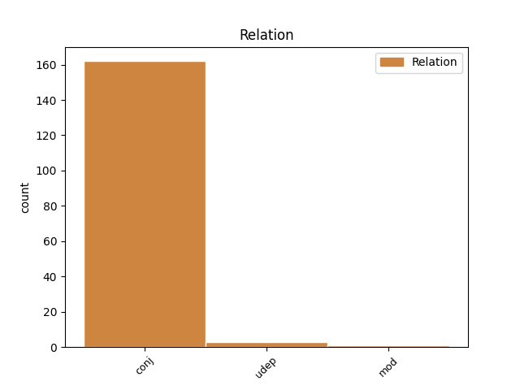
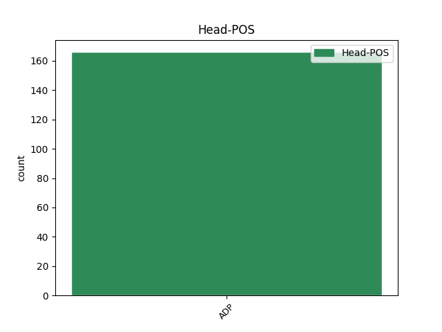
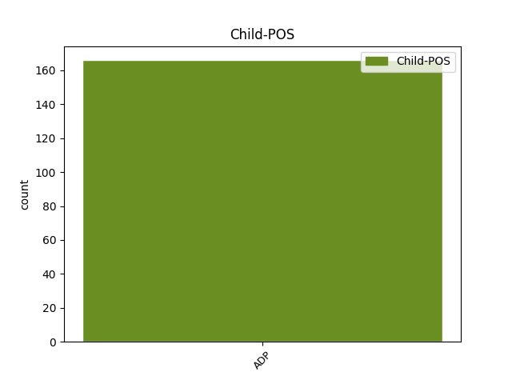

Distribution of features within this leaf



Agreement Rules sorted by frequency.
When the head token is ADP and the dependent token is ADP.
1 " _ _ _ _ 0 _ _ _
2 Za za ADP RR--4---------- AdpType=Prep|Case=Acc 0 _ _ _
3 dva _ _ _ _ 0 _ _ _
4 , _ _ _ _ 0 _ _ _
5 za za ADP RR--4---------- AdpType=Prep|Case=Acc 2 conj _ _
6 tři _ _ _ _ 0 _ _ _
7 týdny _ _ _ _ 0 _ _ _
8 . _ _ _ _ 0 _ _ _
9 " _ _ _ _ 0 _ _ _
Disagree Examples:
1 Zapisoval _ _ _ _ 0 _ _ _
2 jsem _ _ _ _ 0 _ _ _
3 si _ _ _ _ 0 _ _ _
4 jednak _ _ _ _ 0 _ _ _
5 věci _ _ _ _ 0 _ _ _
6 příjemné _ _ _ _ 0 _ _ _
7 a _ _ _ _ 0 _ _ _
8 jednak _ _ _ _ 0 _ _ _
9 věci _ _ _ _ 0 _ _ _
10 nutné _ _ _ _ 0 _ _ _
11 , _ _ _ _ 0 _ _ _
12 od od ADP RR--2---------- AdpType=Prep|Case=Gen 0 _ _ _
13 toho _ _ _ _ 0 _ _ _
14 , _ _ _ _ 0 _ _ _
15 že _ _ _ _ 0 _ _ _
16 se _ _ _ _ 0 _ _ _
17 musím _ _ _ _ 0 _ _ _
18 NAPOSLEDY _ _ _ _ 0 _ _ _
19 zajet _ _ _ _ 0 _ _ _
20 podívat _ _ _ _ 0 _ _ _
21 do _ _ _ _ 0 _ _ _
22 Českého _ _ _ _ 0 _ _ _
23 ráje _ _ _ _ 0 _ _ _
24 - _ _ _ _ 0 _ _ _
25 ještě _ _ _ _ 0 _ _ _
26 jednou _ _ _ _ 0 _ _ _
27 - _ _ _ _ 0 _ _ _
28 až _ _ _ _ 0 _ _ _
29 po po ADP RR--4---------- AdpType=Prep|Case=Acc 12 conj _ _
30 zaplacení _ _ _ _ 0 _ _ _
31 činže _ _ _ _ 0 _ _ _
32 . _ _ _ _ 0 _ _ _
1 Víte _ _ _ _ 0 _ _ _
2 , _ _ _ _ 0 _ _ _
3 to _ _ _ _ 0 _ _ _
4 co _ _ _ _ 0 _ _ _
5 se _ _ _ _ 0 _ _ _
6 stalo _ _ _ _ 0 _ _ _
7 na na ADP RR--6---------- AdpType=Prep|Case=Loc 0 _ _ _
8 té _ _ _ _ 0 _ _ _
9 magické _ _ _ _ 0 _ _ _
10 hoře _ _ _ _ 0 _ _ _
11 a _ _ _ _ 0 _ _ _
12 u u ADP RR--2---------- AdpType=Prep|Case=Gen 7 conj _ _
13 jejího _ _ _ _ 0 _ _ _
14 úpatí _ _ _ _ 0 _ _ _
15 , _ _ _ _ 0 _ _ _
16 je _ _ _ _ 0 _ _ _
17 vlastně _ _ _ _ 0 _ _ _
18 jeden _ _ _ _ 0 _ _ _
19 veliký _ _ _ _ 0 _ _ _
20 příměr _ _ _ _ 0 _ _ _
21 . _ _ _ _ 0 _ _ _
1 Uměli _ _ _ _ 0 _ _ _
2 jsme _ _ _ _ 0 _ _ _
3 si _ _ _ _ 0 _ _ _
4 představit _ _ _ _ 0 _ _ _
5 , _ _ _ _ 0 _ _ _
6 co _ _ _ _ 0 _ _ _
7 by _ _ _ _ 0 _ _ _
8 to _ _ _ _ 0 _ _ _
9 bylo _ _ _ _ 0 _ _ _
10 , _ _ _ _ 0 _ _ _
11 když _ _ _ _ 0 _ _ _
12 bychom _ _ _ _ 0 _ _ _
13 my _ _ _ _ 0 _ _ _
14 byli _ _ _ _ 0 _ _ _
15 v _ _ _ _ 0 _ _ _
16 nějakém _ _ _ _ 0 _ _ _
17 cizím _ _ _ _ 0 _ _ _
18 městě _ _ _ _ 0 _ _ _
19 , _ _ _ _ 0 _ _ _
20 beze bez ADP RV--2---------- AdpType=Voc|Case=Gen 0 _ _ _
21 zpráv _ _ _ _ 0 _ _ _
22 o _ _ _ _ 0 _ _ _
23 rodině _ _ _ _ 0 _ _ _
24 , _ _ _ _ 0 _ _ _
25 v v ADP RR--6---------- AdpType=Prep|Case=Loc 20 conj _ _
26 obavách _ _ _ _ 0 _ _ _
27 z _ _ _ _ 0 _ _ _
28 blížícího _ _ _ _ 0 _ _ _
29 se _ _ _ _ 0 _ _ _
30 nebezpečí _ _ _ _ 0 _ _ _
31 , _ _ _ _ 0 _ _ _
32 a _ _ _ _ 0 _ _ _
33 čekali _ _ _ _ 0 _ _ _
34 , _ _ _ _ 0 _ _ _
35 co _ _ _ _ 0 _ _ _
36 se _ _ _ _ 0 _ _ _
37 s _ _ _ _ 0 _ _ _
38 námi _ _ _ _ 0 _ _ _
39 stane _ _ _ _ 0 _ _ _
40 . _ _ _ _ 0 _ _ _
1 Naslouchal _ _ _ _ 0 _ _ _
2 jsem _ _ _ _ 0 _ _ _
3 mistrovu _ _ _ _ 0 _ _ _
4 zpěvu _ _ _ _ 0 _ _ _
5 a _ _ _ _ 0 _ _ _
6 díval _ _ _ _ 0 _ _ _
7 se _ _ _ _ 0 _ _ _
8 do do ADP RR--2---------- AdpType=Prep|Case=Gen 0 _ _ _
9 kraje _ _ _ _ 0 _ _ _
10 , _ _ _ _ 0 _ _ _
11 na na ADP RR--4---------- AdpType=Prep|Case=Acc 8 conj _ _
12 ptáky _ _ _ _ 0 _ _ _
13 , _ _ _ _ 0 _ _ _
14 kteří _ _ _ _ 0 _ _ _
15 se _ _ _ _ 0 _ _ _
16 kolem _ _ _ _ 0 _ _ _
17 nás _ _ _ _ 0 _ _ _
18 míhali _ _ _ _ 0 _ _ _
19 , _ _ _ _ 0 _ _ _
20 vyklepával _ _ _ _ 0 _ _ _
21 jsem _ _ _ _ 0 _ _ _
22 ornamenty _ _ _ _ 0 _ _ _
23 a _ _ _ _ 0 _ _ _
24 začal _ _ _ _ 0 _ _ _
25 jsem _ _ _ _ 0 _ _ _
26 chápat _ _ _ _ 0 _ _ _
27 , _ _ _ _ 0 _ _ _
28 že _ _ _ _ 0 _ _ _
29 vůbec _ _ _ _ 0 _ _ _
30 nejsou _ _ _ _ 0 _ _ _
31 zbytečné _ _ _ _ 0 _ _ _
32 , _ _ _ _ 0 _ _ _
33 že _ _ _ _ 0 _ _ _
34 je _ _ _ _ 0 _ _ _
35 důležité _ _ _ _ 0 _ _ _
36 udělat _ _ _ _ 0 _ _ _
37 správně _ _ _ _ 0 _ _ _
38 věci _ _ _ _ 0 _ _ _
39 ne _ _ _ _ 0 _ _ _
40 kvůli _ _ _ _ 0 _ _ _
41 lidem _ _ _ _ 0 _ _ _
42 , _ _ _ _ 0 _ _ _
43 kteří _ _ _ _ 0 _ _ _
44 je _ _ _ _ 0 _ _ _
45 nevidí _ _ _ _ 0 _ _ _
46 , _ _ _ _ 0 _ _ _
47 ale _ _ _ _ 0 _ _ _
48 kvůli _ _ _ _ 0 _ _ _
49 nám _ _ _ _ 0 _ _ _
50 samým _ _ _ _ 0 _ _ _
51 , _ _ _ _ 0 _ _ _
52 kteří _ _ _ _ 0 _ _ _
53 je _ _ _ _ 0 _ _ _
54 vidíme _ _ _ _ 0 _ _ _
55 a _ _ _ _ 0 _ _ _
56 víme _ _ _ _ 0 _ _ _
57 o _ _ _ _ 0 _ _ _
58 nich _ _ _ _ 0 _ _ _
59 . _ _ _ _ 0 _ _ _
1 Dopisem _ _ _ _ 0 _ _ _
2 , _ _ _ _ 0 _ _ _
3 který _ _ _ _ 0 _ _ _
4 je _ _ _ _ 0 _ _ _
5 při _ _ _ _ 0 _ _ _
6 našem _ _ _ _ 0 _ _ _
7 narození _ _ _ _ 0 _ _ _
8 poslán _ _ _ _ 0 _ _ _
9 někomu _ _ _ _ 0 _ _ _
10 na _ _ _ _ 0 _ _ _
11 tento _ _ _ _ 0 _ _ _
12 svět _ _ _ _ 0 _ _ _
13 , _ _ _ _ 0 _ _ _
14 dopisem _ _ _ _ 0 _ _ _
15 , _ _ _ _ 0 _ _ _
16 který _ _ _ _ 0 _ _ _
17 byl _ _ _ _ 0 _ _ _
18 poslán _ _ _ _ 0 _ _ _
19 z z ADP RR--2---------- AdpType=Prep|Case=Gen 0 _ _ _
20 lásky _ _ _ _ 0 _ _ _
21 a _ _ _ _ 0 _ _ _
22 s s ADP RR--7---------- AdpType=Prep|Case=Ins 19 conj _ _
23 láskou _ _ _ _ 0 _ _ _
24 . _ _ _ _ 0 _ _ _